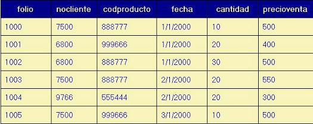
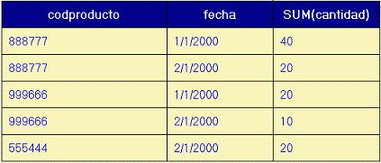

SQL y álgebra Relacional
Es el lenguaje utilizado por todos los DBMS para realizar las diferentes actividades relacionadas con la definición y utilización de bases de datos. Las operaciones de consulta a la base de datos están íntimamente ligadas con la obtención de relaciones a partir de otras relaciones aplicando el álgebra relacional.
label_outline La sintaxis básica de una sentencia de consulta SQL es la siguiente:
SELECT columnas
FROM tablas
WHERE condición
en dónde distinguimos tres cláusulas: la cláusula SELECT, la cláusula FROM y la cláusula WHERE.
Todas las consultas que pueden plantearse con álgebra relacional, pueden expresarse con una sentencia de consulta de SQL. En esta lectura se ilustra la equivalencia entre la notación del álgebra relacional y la de SQL, por medio de ejemplos basados en un esquema de referencia. Cabe señalar que si bien sólo algunos ejemplos muestran la composición de operadores, todas las composiciones son válidas, y su instrumentación en SQL es viable considerando esencialmente que:
label_outline La lista de columnas de la cláusula SELECT es la lista de la proyección final (más externa).
label_outline La lista de tablas de la cláusula FROM incluye a todas las tablas participantes.
label_outline Las condiciones se expresan en la cláusula WHERE, combinándolas con AND (o con OR según el significado específico).
label Esquema de referencia
Materiales(Clave,Descripcion,Precio)
Proveedores(RFC,RazonSocial)
Proyectos(Numero,Denominacion)
Entregan(Clave,RFC,Numero,Fecha,Cantidad)
Convenio: para evitar las letras griegas originales del álgebra relacional, en esta lectura se utiliza la siguiente notación:
SL{condición} : selección con el criterio condición.
PR{lista de columnas}: proyección de lista de columnas.
JN: reunión natural (natural join).
JN{condición}: reunión con el criterio condición (teta join).
UN: unión.
IN: intersección.
- : diferencia
X: producto cartesiano.
A continuación se presenta la equivalencia entre los operadores y SQL.
Consulta de una relación cualquiera.
Algebra relacional.
materiales
SQL
select * from materiales
Selección
Algebra relacional.
SL{clave=1000}(materiales)
SQL
select * from materiales
where clave=1000
Proyección
Algebra relacional.
PR{clave,rfc,fecha} (entregan)
SQL
select clave,rfc,fecha from entregan
Reunión natural
Algebra relacional.
entregan JN proveedores
SQL
select * from entregan,proveedores
where entregan.rfc=proveedores.rfc
Reunión con criterio específico
Algebra relacional.
entregan JN{entregan.numero <= proyectos.numero} proyectos
SQL
select * from entregan,proyectos
where entregan.numero<=proyectos.numero
Unión (se ilustra junto con selección)
Algebra relacional.
SL{clave=1000}(entregan) UN SL{clave=2000}(entregan)
SQL
(select * from entregan where clave=1000)
union
(select * from entregan where clave=2000)
Intersección (se ilustra junto con selección y proyección)
Algebra relacional.
PR{clave}(SL{numero=5001}(entregan)) IN PR{clave}(SL{numero=5018}(entregan))
SQL
(select clave from entregan where numero=5001)
intersect
(select clave from entregan where numero=5018)
Cabe mencionar que este método solo se puede ejecutar en ORACLE, ya que en SQL Server y en Access no esta definido. sin embargo podríamos realizar la misma consulta con el uso de subconsultas que veremos mas adelante..
Diferencia (se ilustra con selección )
Algebra relacional.
entregan - SL{clave=1000}(entregan)
SQL
(select * from entregan)
minus
(select * from entregan where clave=1000)
Al igual que el caso anterior este método solo se puede ejecutar en ORACLE, ya que en SQL y en Access no esta definido. y también podríamos realizar la misma consulta con el uso de subconsultas.
Producto cartesiano
Algebra relacional.
entregan X materiales
SQL
select * from entregan,materiales
En muchos casos no requerimos conocer el detalle de todas las de tuplas de una relación, sino un resumen que nos presente la información en forma agregada.
Como ejemplo, pensemos en el esquema siguiente, que representa
ventas(folio,nocliente,codproducto,fecha,cantidad,precioventa)
label_outline
La siguiente es una representación tabular del esquema:

Si estamos interesados por conocer la cantidad vendida de cada producto, sin importar la fecha, el resultado sería el siguiente:

en donde se presenta cada uno de los tres productos distintos, con la suma de las cantidades vendidas de cada producto.
Si deseamos conocer la cantidad vendida de cada producto cada día, tendríamos lo siguiente:

label_outline
En este caso, el producto 888777 tiene dos ventas el 1/1/2000 que acumulamos en este día, el producto 999666 tiene una sola venta cada día y el 555444 sólo aparece en la fecha 2/1/2000.
label_outline
Para hacer este tipo de agrupaciones, en SQL se utiliza la sintaxis general:
FROM tablas
[WHERE condiciones]
[GROUP BY columnas que agrupan]
[HAVING condiciones sobre funciones agregadas]
Donde las cláusulas entre corchetes son opcionales. Nótese que en la cláusula GROUP BY deben aparecer todas las columnas que en la cláusula SELECT (no necesariamente en el mismo orden) que no sean funciones agregadas, ya que cuando se presentan agregados no es posible al mismo tiempo presentar datos detallados. La cláusula HAVING es similar a la cláusula WHERE, pero en ella se pueden utilizar condiciones que aplican a las funciones agregadas, lo cual no es posible hacerlo en la cláusula WHERE. Si se omite la cláusula
GROUP BY, la lista de columnas que agrupan debe ser vacía y las funciones agregadas se calculan para toda la relación.
label
Las funciones agregadas son:
AVG(expresión) Promedio de la expresión
MIN(expresión) Mínimo de la expresión
MAX(expresión) Máximo de la expresión
COUNT(*) Número de tuplas (renglones)
COUNT(expresión) número de renglones en los que la expresión es no nula.
STD(expresión) Desviación estándar de la expresión
Las expresiones pueden ser columnas, constantes o expresiones aritméticas en las que participen columnas y/o constantes.
Aplicando esto a nuestro esquema anterior, la cantidad por producto que obtuvimos se expresa como:
FROM ventas
GROUP BY codproducto
y la cantidad por día de cada producto se expresa como:
SELECT codproducto, fecha, SUM(cantidad)FROM ventas
GROUP BY codproducto,fecha
Como un ejemplo más completo, si deseamos conocer por cada cliente cada día cuál es la cantidad total vendida, el importe (precio por cantidad) de las ventas, el promedio de la cantidad vendida, el mínimo y máximo de los precios de venta pero restringido a aquellos clientes cuyo importe de ventas por día sea mayor a 200, la expresión SQL sería:
SUM(precioventa*cantidad),AVG(cantidad),
MIN(precioventa),MAX(precioventa)
FROM ventas
GROUP BY nocliente,fecha
HAVING SUM(precioventa*cantidad) > 200
Si nos interesaran estas funciones agregadas para toda la tabla ventas, omitiríamos sencillamente las cláusulas GROUP BY y HAVING, quedando únicamente:
FROM ventas